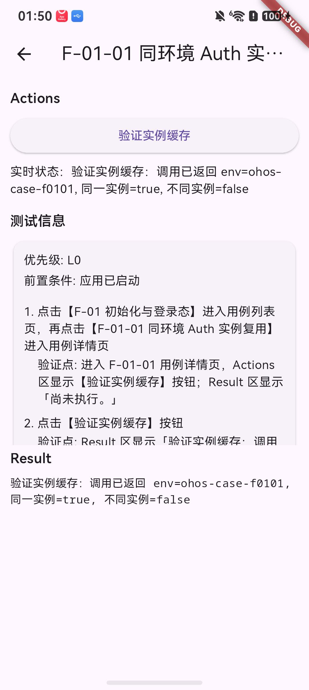
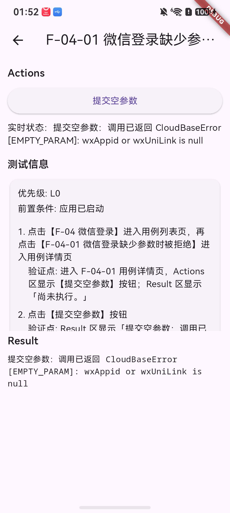

核心功能
猎户星云是开发者自测工具，不提供公开商业服务；所有登录行为均通过 CloudBase Auth 完成。
匿名登录
调用 CloudBase 匿名登录，获取并展示匿名登录态。
自定义票据登录
输入自定义票据，验证票据登录与错误返回。
微信登录
拉起微信授权，获取临时 code，由 CloudBase 换取登录态。
用户信息
读取并展示当前登录用户的 uid、环境和登录类型。
应用运行流程
应用首页提供三种登录入口，每一种入口都会回到统一的登录态展示页。
- 打开猎户星云，首页显示匿名登录、自定义票据登录、微信登录三个入口。
- 匿名登录：点击匿名登录 → 调用
signInAnonymously→ 展示 ANONYMOUS 登录态或错误信息。 - 自定义票据登录：输入票据 → 点击票据登录 → 调用
signInWithTicket→ 展示 CUSTOM 登录态或票据错误。 - 微信登录：点击微信登录 → 检测微信客户端 → 拉起微信授权 → 获取临时 code → 调用
signInByWx→ CloudBase 换取登录态并读取用户信息。 - 结果展示：统一展示登录状态、用户信息和错误信息；支持退出登录并清理本地登录态。
应用界面
以下界面来自鸿蒙应用真机验证工装，展示登录入口、登录结果与用户信息读取。

登录入口：匿名登录、票据登录、微信登录

登录结果：登录态、用户信息与错误提示
说明：猎户星云是面向开发者的登录链路验证工具，当前未上架应用市场；微信登录能力依赖微信客户端与微信开放平台配置。